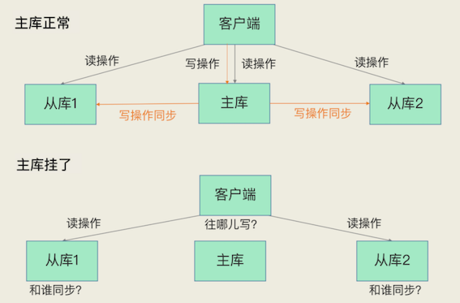
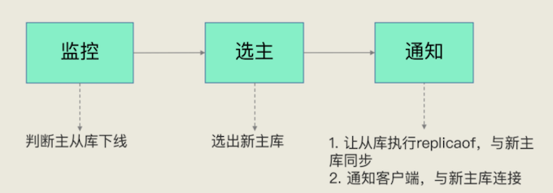
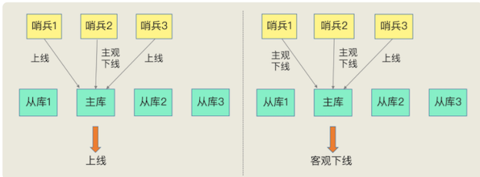
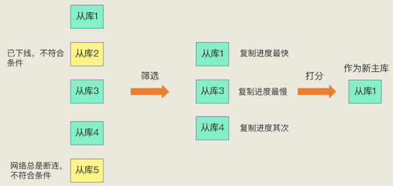
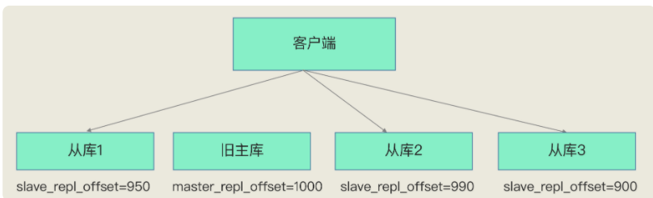

第七节 哨兵机制：主库不间断服务
主从库集群模式下，如果从库发生故障了，客户端可以继续向主库或其他从库发送请求，进行相关的操作，但是如果主库发生故障了，那就直接会影响到从库的同步，因为从库没有相应的主库可以进行数据复制操作了。
- 如果客户端发送的都是读操作请求，那还可以由从库继续提供服务，这在纯读的业务场景下还能被接受
- 一旦有写操作请求了，按照主从库模式下的读写分离要求，需要由主库来完成写操作，此时，也没有实例可以来服务客户端的写操作请求了

无论是写服务中断，还是从库无法进行数据同步，都是不能接受的。
如果主库挂了，我们就需要运行一个新主库，比如说把一个从库切换为主库，把它当成主库
- 主库真的挂了吗？
- 该选择哪个从库作为主库？
- 怎么把新主库的相关信息通知给从库和客户端呢？
这就要提到哨兵机制了。在 Redis 主从集群中，哨兵机制是实现主从库自动切换的关键机制，它有效地解决了主从复制模式下故障转移的这三个问题。
1、哨兵机制的基本流程
哨兵其实就是一个运行在特殊模式下的 Redis 进程，主从库实例运行的同时，它也在运行。哨兵主要负责的就是三个任务：监控、选主（选择主库）和通知。
哨兵的主要职责：
- 监控：通过PING来监控主从
- 选主：主库挂了，从从库中按一定的机制选择一个新主库
- 通知：通知其他从库和客户端新的主库信息
1-1 监控
监控是指哨兵进程在运行时，周期性地给所有的主从库发送 PING 命令，检测它们是否仍然在线运行。
- 如果从库没有在规定时间内响应哨兵的 PING 命令，哨兵就会把它标记为“下线状态”；
- 如果主库也没有在规定时间内响应哨兵的 PING 命令，哨兵就会判定主库下线，然后开始自动切换主库的流程。
这个流程首先是执行哨兵的第二个任务，选主
1-2 选主
主库挂了以后，哨兵就需要从很多个从库里，按照一定的规则选择一个从库实例，把它作为新的主库。
这一步完成后，现在的集群里就有了新主库。
1-3 通知
- 在执行通知任务时，哨兵会把新主库的连接信息发给其他从库，让它们执行
replicaof命令，和新主库建立连接，并进行数据复制 - 同时，哨兵会把新主库的连接信息通知给客户端，让它们把请求操作发到新主库上。

通知任务相对来说比较简单，哨兵只需要把新主库信息发给从库和客户端，让它们和新主库建立连接就行，并不涉及决策的逻辑。
但是，在监控和选主这两个任务中，哨兵需要做出两个决策：
- 在监控任务中，哨兵需要判断主库是否处于下线状态；
- 在选主任务中，哨兵也要决定选择哪个从库实例作为主库。
哨兵对主库的下线判断有“主观下线”和“客观下线”两种
2、主观下线和客观下线
2-1 主观下线
哨兵进程会使用 PING 命令检测它自己和主、从库的网络连接情况，用来判断实例的状态。
如果哨兵发现主库或从库对 PING 命令的响应超时了，那么，哨兵就会先把它标记为“主观下线”
哨兵进程会使用 PING 命令检测它自己和主、从库的网络连接情况，用来判断实例的状态。
- 果哨兵发现主库或从库对 PING 命令的响应超时了，那么，哨兵就会先把它标记为“主观下线”。
- 如果检测的是从库，那么，哨兵简单地把它标记为“主观下线”就行了，因为从库的下线影响一般不太大，集群的对外服务不会间断。
如果检测的是主库，那么，哨兵还不能简单地把它标记为“主观下线”，开启主从切换。因为很有可能存在这么一个情况：那就是哨兵误判了，其实主库并没有故障。
一旦启动了主从切换，后续的选主和通知操作都会带来额外的计算和通信开销。
首先，我们要知道啥叫误判。很简单，就是主库实际并没有下线，但是哨兵误以为它下线了。误判一般会发生在集群网络压力较大、网络拥塞，或者是主库本身压力较大的情况下。
一旦哨兵判断主库下线了，就会开始选择新主库，并让从库和新主库进行数据同步，这个过程本身就会有开销，例如，哨兵要花时间选出新主库，从库也需要花时间和新主库同步。
那怎么减少误判呢？
2-2 哨兵集群
哨兵机制通常会采用多实例组成的集群模式进行部署，这也被称为哨兵集群。
引入多个哨兵实例一起来判断，就可以避免单个哨兵因为自身网络状况不好，而误判主库下线的情况。
同时，多个哨兵的网络同时不稳定的概率较小，由它们一起做决策，误判率也能降低。
2-3 客观下线
在判断主库是否下线时，不能由一个哨兵说了算，只有大多数的哨兵实例，都判断主库已经“主观下线”了，主库才会被标记为“客观下线”，这个叫法也是表明主库下线成为一个客观事实了
判断原则就是：少数服从多数。同时，这会进一步触发哨兵开始主从切换流程。
- Redis 主从集群有一个主库、三个从库，还有三个哨兵实例。在图片的左边，哨兵 2 判断主库为“主观下线”，但哨兵 1 和 3 却判定主库是上线状态，此时，主库仍然被判断为处于上线状态。
- 哨兵 1 和 2 都判断主库为“主观下线”，此时，即使哨兵 3 仍然判断主库为上线状态，主库也被标记为“客观下线”了。

简单来说，“客观下线”的标准就是，当有 N 个哨兵实例时，最好要有 N/2 + 1 个实例判断主库为“主观下线”，才能最终判定主库为“客观下线”，就可以减少误判的概率，也能避免误判带来的无谓的主从库切换。（当然，有多少个实例做出“主观下线”的判断才可以，可以由 Redis 管理员自行设定）。
3、如何选定新主库？
哨兵选择新主库的过程称为“筛选 + 打分”
- 我们在多个从库中，先按照一定的筛选条件，把不符合条件的从库去掉。
- 然后，我们再按照一定的规则，给剩下的从库逐个打分，将得分最高的从库选为新主库

3-1 筛选
在选主时，除了要检查从库的当前在线状态，还要判断它之前的网络连接状态。
如果从库总是和主库断连，而且断连次数超出了一定的阈值，我们就有理由相信，这个从库的网络状况并不是太好，就可以把这个从库筛掉了。
具体怎么判断呢？你使用配置项 down-after-milliseconds * 10。
其中，down-after-milliseconds 是我们认定主从库断连的最大连接超时时间。
如果在 down-after-milliseconds 毫秒内，主从节点都没有通过网络联系上，我们就可以认为主从节点断连了。
如果发生断连的次数超过了10次，就说明这个从库的网络状况不好，不适合作为新主库。
新建
sentinal.conf文件进行配置，不在redis.conf中
3-2 打分
我们可以分别按照三个规则依次进行三轮打分，这三个规则分别是从库优先级、从库复制进度以及从库 ID 号。
只要在某一轮中，有从库得分最高，那么它就是主库了，选主过程到此结束。如果没有出现得分最高的从库，那么就继续进行下一轮。
第一轮：优先级最高的从库得分高。
用户可以通过 slave-priority 配置项，给不同的从库设置不同优先级。
你有两个从库，它们的内存大小不一样，你可以手动给内存大的实例设置一个高优先级。在选主时，哨兵会给优先级高的从库打高分，如果有一个从库优先级最高，那么它就是新主库了。如果从库的优先级都一样，那么哨兵开始第二轮打分。
第二轮：和旧主库同步程度最接近的从库得分高。
如果选择和旧主库同步最接近的那个从库作为主库，那么，这个新主库上就有最新的数据。
主从库同步时有个命令传播的过程。在这个过程中，主库会用 master_repl_offset记录当前的最新写操作在 repl_backlog_buffer 中的位置，而从库会用 slave_repl_offset 这个值记录当前的复制进度。
我们想要找的从库，它的 slave_repl_offset 需要最接近 master_repl_offset。
如果在所有从库中，有从库的 slave_repl_offset 最接近 master_repl_offset，那么它的得分就最高，可以作为新主库。
master_repl_offset是单调增加的，它的值可以大于repl_backlog_size。Redis会用一个名为repl_backlog_idx的值记录在环形缓冲区中的最新写入位置。
举个例子，例如写入len的数据，那么
master_repl_offset += lenrepl_backlog_idx += len- 如果
repl_backlog_idx等于repl_backlog_size时，repl_backlog_idx会被置为0，表示从环形缓冲区开始位置继续写入。
而在实际的选主代码层面，sentinel是直接比较从库的slave_repl_offset，来选择和主库最接近的从库。

旧主库的 master_repl_offset 是 1000，从库 1、2 和 3 的 slave_repl_offset 分别是 950、990 和 900，那么，从库 2 就应该被选为新主库。
当然，如果有两个从库的 slave_repl_offset 值大小是一样的（例如，从库 1 和从库 2 的 slave_repl_offset 值都是 990），我们就需要给它们进行第三轮打分了。
第三轮：ID 号小的从库得分高。
每个实例都会有一个 ID，这个 ID 就类似于这里的从库的编号。目前，Redis 在选主库时，有一个默认的规定：
在优先级和复制进度都相同的情况下，ID 号最小的从库得分最高，会被选为新主库。
- 首先，哨兵会按照在线状态、网络状态，筛选过滤掉一部分不符合要求的从库，
- 然后，依次按照优先级、复制进度、ID 号大小再对剩余的从库进行打分，只要有得分最高的从库出现，就把它选为新主库。
4、本节小结
哨兵机制，它是实现 Redis 不间断服务的重要保证。具体来说，主从集群的数据同步，是数据可靠的基础保证；而在主库发生故障时，自动的主从切换是服务不间断的关键支撑。
Redis 的哨兵机制自动完成了以下三大功能，从而实现了主从库的自动切换，可以降低 Redis 集群的运维开销：
- 监控主库运行状态，并判断主库是否客观下线；
- 在主库客观下线后，选取新主库；
- 选出新主库后，通知从库和客户端。
为了降低误判率，在实际应用时，哨兵机制通常采用多实例的方式进行部署，多个哨兵实例通过“少数服从多数”的原则，来判断主库是否客观下线
亮点
- 哨兵的本质：是一个redis实例，要做三件事：监控主库，选举新主库，通知客户端和从机
- 哨兵是通过心跳检测，监控主库状态，主库下线被分为：主观下线和客观下线、
- 哨兵监控是可能误判的，所以哨兵一般是集群部署，采取投票的形式减少误判
- 选定新主库规则是先筛选在打分，得分高的会被选为新主库
- 筛选规则：从库当前的网络连接状况，以及之前的网络连接状况，筛选中断次数标准可以配置
- 打分规则：从库的优先级，数据同步状况，Id号大小，可以分为三轮，只要有一轮出现得分高的，就能选出
- 判断哪个从库的数据同步最接近主库，不是拿从库与主库比较，而是从库之间互相比较，谁大谁就是最接近的
本节一问
主从库切换是需要一定时间的。所以，在这个切换过程中，客户端能否正常地进行请求操作呢？如果想要应用程序不感知服务的中断，还需要哨兵或需要客户端再做些什么吗
- 绝大部分的读请求，可以响应。由于主库实例挂掉，肯定有小部分数据未被同步至从实例，而这部分数据的读请求是失败的。
- 如果这小部分数据是新写数据，且未同步的话，发往从库的读请求是会失败的。但如果是更新的数据，且未同步的话，那么从库的读请求会返回旧值
- 由于主从机制实现了读写分离，主实例挂掉，无法响应写请求。